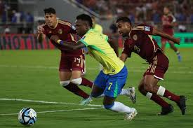
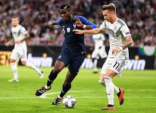

El fútbol es un deporte mundialmente popular que se juega entre dos equipos de once jugadores cada uno. El objetivo principal es anotar goles en la portería del equipo rival utilizando principalmente los pies para mover el balón. Es un deporte que despierta pasiones y une culturas, siendo una parte esencial de la vida de millones de personas. Además, los clubes no solo representan a sus ciudades o países, sino que también reflejan historia, identidad y tradición.

